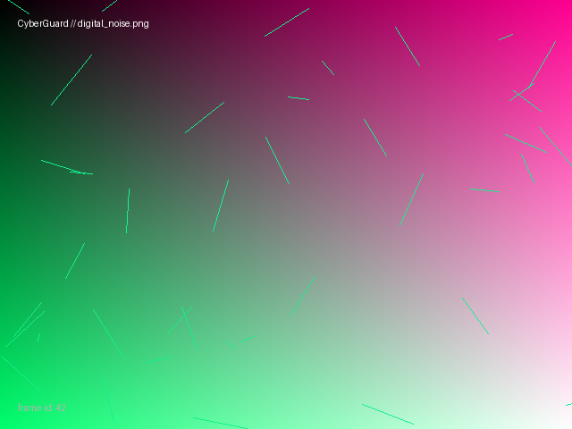

This image was shared in the club's general chat as "just a cool wallpaper." One of the mentors
says it's about 4 KB heavier than it should be for its dimensions and colour count. That's suspicious.

Download digital_noise.png
Hints:
- The least significant bit of each colour channel can carry hidden information without
visibly changing the image. Try writing a small Python script with Pillow to read the red
channel's LSB of every pixel, in order — the first 32 bits tell you how many bytes of
hidden data follow.
- If what you extract doesn't look like a readable flag, don't assume you did it wrong —
look at the image itself again. Not everything in this challenge is hidden in the pixels.